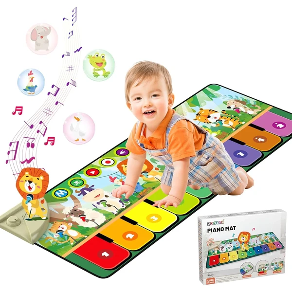
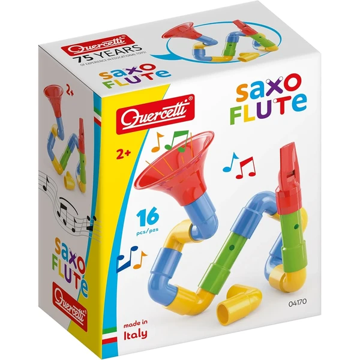
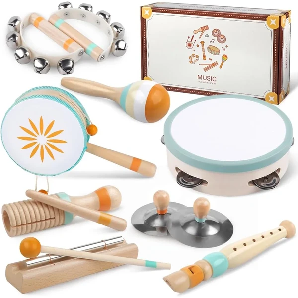
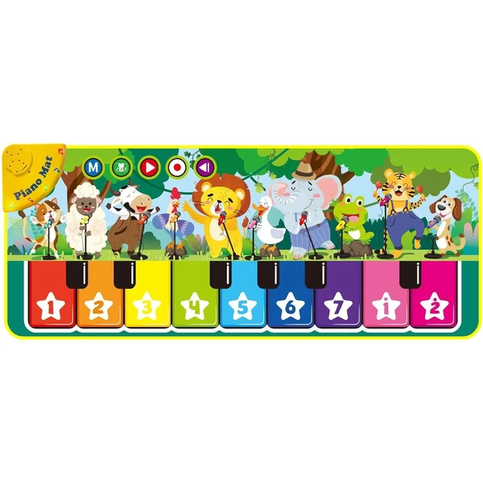

Alfombra musical piano Rodzon
Una alfombra de piano con 19 canciones, 10 sonidos de animales y varios modos de juego, incluida la grabación de melodías propias. El volumen es regulable para proteger el oído del niño.
⭐ ¿Por qué nos gusta?
- ✔ Diecinueve canciones y diez sonidos de animales.
- ✔ Volumen regulable.
- ✔ Permite grabar y reproducir melodías propias.
💬 Lo que más destacan las familias
Lo que más suele gustar es la cantidad de canciones y sonidos de animales que trae, que hacen que el niño no se canse enseguida. También se valora poder bajar el volumen para que no resulte molesto en casa.
Ver en Amazon

Alfombra de pintura con agua reutilizable
Una alfombra de 110x70 cm para pintar solo con agua, sin tinta ni manchas, con cuatro bolígrafos recargables y un libro de dibujo. El trazo desaparece al secarse y se puede volver a usar.
⭐ ¿Por qué nos gusta?
- ✔ Solo necesita agua, sin tinta ni manchas.
- ✔ Incluye cuatro bolígrafos y libro de dibujo.
- ✔ Se pliega para guardar o viajar.
💬 Lo que más destacan las familias
Muchos padres coinciden en que es ideal para los que empiezan a pintar, precisamente porque no hay manchas de las que preocuparse. También gusta que se pueda plegar y guardar fácilmente, o llevarla de viaje.
Ver en Amazon

Saxoflute Quercetti
Un set de piezas para construir instrumentos de viento propios (flautas y trompetas) combinando tubos curvos, tubos rectos, un silbato y una trompeta.
⭐ ¿Por qué nos gusta?
- ✔ Permite construir varios instrumentos distintos.
- ✔ Piezas irrompibles y seguras.
- ✔ Fabricado en Italia.
💬 Lo que más destacan las familias
Una de las cosas más comentadas es lo mucho que engancha poder montar su propio instrumento antes de tocarlo, combinando piezas de formas distintas. También se valora que las piezas sean resistentes al uso diario de un niño pequeño.
Ver en Amazon

Set de instrumentos de madera Montessori
Un set de instrumentos de percusión de madera en colores neutros, pensado para que el niño sienta el ritmo y trabaje la coordinación mano-ojo con distintos sonidos.
⭐ ¿Por qué nos gusta?
- ✔ Varios instrumentos de percusión en un mismo set.
- ✔ Madera con bordes redondeados y acabado seguro.
- ✔ Colores neutros, sirve también de decoración.
💬 Lo que más destacan las familias
Los compradores valoran especialmente el aspecto natural de la madera frente a los instrumentos de plástico con luces y pilas. A los niños les suele encantar experimentar con los distintos sonidos de cada pieza.
Ver en Amazon

Alfombra piano musical
Una alfombra acolchada con teclas grandes y coloridas que se pueden pisar o pulsar con las manos, pensada para trabajar la coordinación y el sentido del ritmo.
⭐ ¿Por qué nos gusta?
- ✔ Teclas grandes, fáciles de pisar o pulsar.
- ✔ Alfombra acolchada y flexible.
- ✔ Se puede jugar sentado, tumbado o de pie.
💬 Lo que más destacan las familias
Entre los comentarios más habituales aparece que las teclas grandes son perfectas para los peques que todavía no tienen mucha precisión, tanto con las manos como con los pies. También se comenta que resulta cómoda de usar sentado, tumbado o de pie.
Ver en Amazon